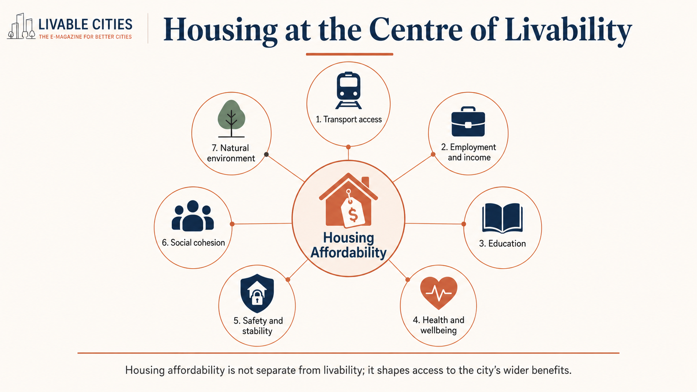
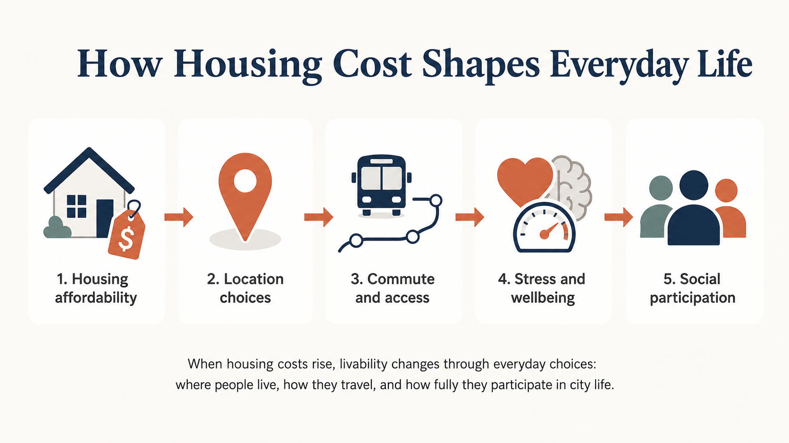
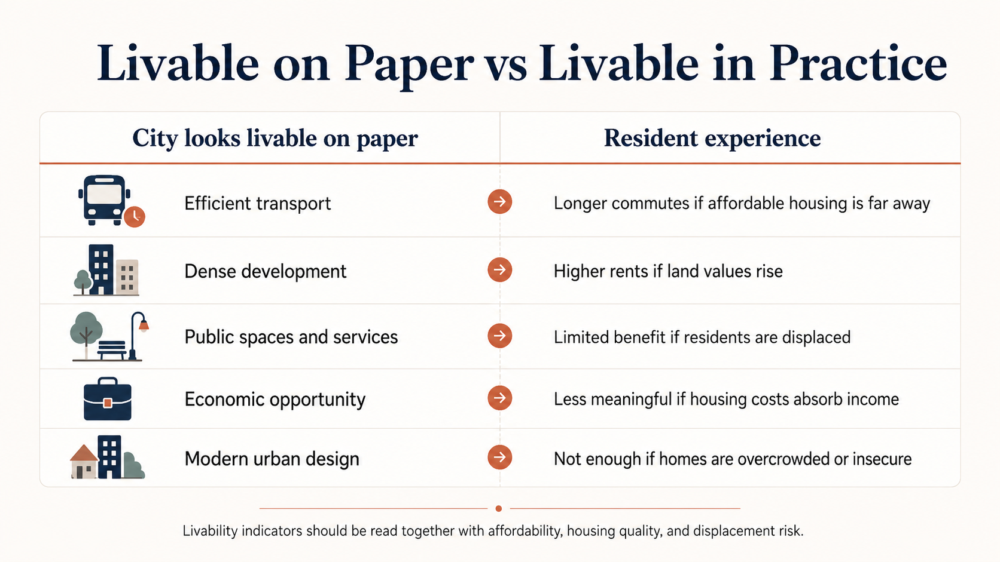
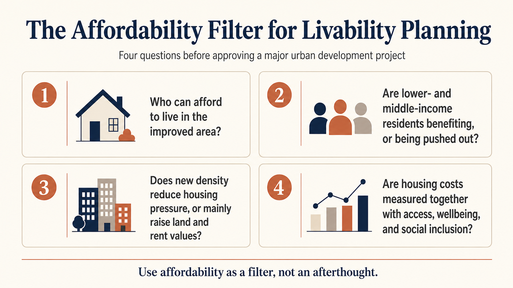

The City Looks Livable — Until Rent Enters the Picture
A few years ago, I briefly stayed with a friend in Hong Kong. He paid around USD 1,200 a month for a flat barely large enough for daily comfort: a tiny washroom, thin walls, and almost no private space. Outside, Hong Kong looked like a model city — efficient trains, dense employment, strong services, and genuine economic energy. Inside that flat, the word "livable" felt much less convincing.
That contradiction defines the central problem fast-growing cities now face. Housing affordability should not sit beside transport, greenery, and employment as one more livability indicator — it is the condition that decides who can access those urban advantages. If ordinary residents cannot afford decent housing near jobs and services, the city's strengths become visible but unreachable.
When Livability Improvements Price Residents Out
The structural risk for fast-growing cities is not that livability fails to improve — it is that improvement in some domains actively undermines the condition that allows residents to benefit from the rest. Martino et al. (2021) demonstrate this in Metro Vancouver: areas scoring well on accessibility, social diversity, and economic vitality simultaneously saw affordability worsen as land values rose. This is a design failure, not a side effect.
Badland et al. (2014) frame livability through interconnected domains — housing, transport, safety, education, employment, and social cohesion — each linked to health and equity outcomes. Van Kamp et al. (2003) argue that strong objective scores tell planners little unless read alongside residents' lived experience of whether those conditions feel stable and genuinely accessible. Taken together, these frameworks reveal a deeper point: if housing cost forces a resident out, improvements across every other domain produce no benefit for that person. The mutually reinforcing domains Badland et al. describe become irrelevant once affordability gives way. Martino et al.'s (2021) findings confirm this precisely: cities can satisfy objective livability measures while systematically failing the lived condition Van Kamp et al. insist must accompany them.

Affordability as the Gatekeeper
Housing cost shapes the geography of everyday life. When rent outgrows ordinary incomes, residents are pushed into smaller units, overcrowding, insecure tenancies, or distant locations with longer commutes — each weakening access to the same domains Badland et al. (2014) identify as central to urban wellbeing.

Affordability as the Gatekeeper continued
Chan and Wong's (2021) Hong Kong study gives this practical weight: housing expense, living density, housing environment problems, and housing satisfaction each independently predict subjective wellbeing, with private renters bearing the strongest pressure. For planning officers, the implication is precise: housing insecurity is not just a welfare problem outside planning. It is often created by planning decisions about zoning and land supply. Where planning adds density without protecting tenure, it manufactures the very vulnerability Chan and Wong measure.
The Density Trade-Off
Density is often presented as the clean solution: build up, shorten distances, support transit, and reduce land waste. The logic is reasonable — low-density growth carries real costs in transport expenditure, thinner services, and distance from opportunity. But density alone does not guarantee inclusion.
Martino et al. (2021) show the risk clearly. In Metro Vancouver, denser areas performed better on accessibility, diversity, and economic vitality while affordability worsened simultaneously. That is not an argument against density. It is an argument against treating density as automatically progressive. Without affordability protections, density produces a selective form of livability — better urban conditions for those who can pay, and displacement or overcrowding for those who cannot.

“If livability is accessible mainly to high-income residents, it is not livability. It is livability with an entry fee.”
The Affordability Filter
A practical response is to apply an Affordability Filter to every major livability project. Before approving a redevelopment, transit-oriented district, or high-density plan, decision-makers should ask: who can afford to live here after completion, which residents are protected from displacement during the value increase, and does the new supply reduce rent pressure or mainly raise land prices?

The Affordability Filter continued
Vienna shows why this filter must be built into the housing system from the outset, not applied after prices have risen. The city maintains approximately 60 percent of its housing stock in the public or subsidised sector through non-profit partnerships and long-term affordability conditions tied to publicly funded land (Reinprecht, 2014; Housing Europe, 2021). Density increases in inner-city districts have not produced comparable displacement pressures because affordability functions as a design condition rather than an afterthought (Housing Europe, 2021).
Two mechanisms deserve priority. Inclusionary zoning should require a defined share of affordable units — commonly 10 to 25 percent — in major private developments, particularly near new transit or public infrastructure (Calavita & Mallach, 2010). Its effectiveness depends on tight design: affordability benchmarked to local income levels rather than city-wide medians, long-term unit covenants, and restricted in-lieu fee provisions — in high-opportunity locations, the ability to pay a cash substitute rather than build in-place defeats the instrument's purpose entirely. Non-profit and public housing partnerships work through a different mechanism: by holding land in community or public ownership with permanent affordability covenants, they remove stock from speculative resale cycles, structurally guaranteeing affordability rather than leaving it contingent on market conditions.
Livability reporting should complement these mechanisms with rent-burden analysis, displacement-risk mapping, overcrowding rates, and tenure security alongside transport and density targets — making trade-offs visible before a neighbourhood is "improved" for everyone except those priced out of it.
Conclusion
That is why the Hong Kong room matters — and why it matters differently now. At first, it illustrated a contradiction: a livable city containing an unlivable flat. The evidence shows the contradiction is structural. Badland et al.'s (2014) interconnected domains depend on housing as their foundation; Van Kamp et al. (2003) show that objective scores on those domains lose meaning when residents cannot sustain their place in the city; Martino et al. (2021) show that density-led improvement can deepen the affordability losses that Van Kamp et al. identify as erasing its value; and Chan and Wong (2021) close the loop — those losses register most severely among private renters whose vulnerability is a planning output, not a background condition. My friend was not unlucky. He was the predictable outcome of a city that kept improving its livability without asking who could still afford to remain.
For fast-growing cities, the test is direct: who gets to live close enough, securely enough, and affordably enough to benefit from the city being built? If livability is accessible mainly to high-income residents, it is not livability. It is livability with an entry fee.